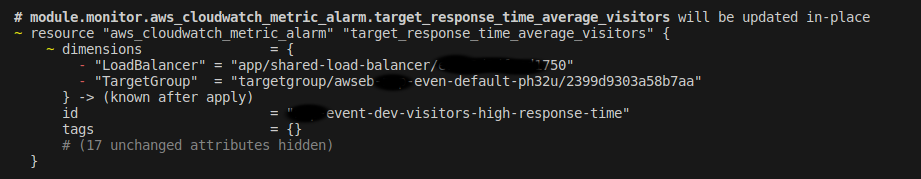

SCC
Brasil
os cloud gurus
Software Cloud Consulting
Your software development, cloud, consulting & shoring company
Useful commands to troubleshoot terraform infrastructure
Introduction
When working with Terraform, it's important to have a good understanding of the available commands and how to use them effectively. Terraform provides a set of commands for managing your infrastructure, and knowing how to use them can help you troubleshoot issues, debug your configuration, and gain insights into your infrastructure. In this article, we'll explore 10 useful Terraform commands that can help you troubleshoot your infrastructure.
Commands
One common issue that you might encounter when working with Terraform is that it keeps recreating
resources every time you run
terraform apply. This can happen if the resource's configuration has changed
outside of Terraform, or if the state file
has become out of sync with the actual infrastructure. To troubleshoot this issue, you can use
the following commands to inspect
the state file, refresh the state, and debug the problem.
To verify the actual configuration that is triggering the recreation, you can use the
terraform plan command to
generate an execution plan and see what changes Terraform will make to your infrastructure.terraform plan will show you what changes will be
applied to your infrastructure.
Example of an object that will be updated, show in the plan output. In the message you can see the changes that will be made, and to which attributes.
On this case the change is triggered by the change in the TargetGroup and Load Balancer changes, you can checkout the state of these resources to view what attributes are being changed and why.
In case you need more information about this object, you can use the
terraform state show command to display the
current state of the resource and inspect its attributes and metadata.terraform state show aws_instance.example will show the state of the
"example" AWS instance.terraform validate in your project directory will validate your
configuration files.terraform state list will list all the
resources in your state file.terraform refresh will update your state file to
match the current state of
your infrastructure.terraform rm aws_instance.example will remove the "example" AWS
instance from your state file.terraform import aws_instance.example i-abc1234 will import the
"example" AWS instance with ID "i-abc1234" into your state file.
# Import the "example" AWS instance
terraform import aws_instance.example i-abc1234
export TF_LOG=”DEBUG”, and
then set your log path with export TF_LOG_PATH="" . This enables
detailed logging, which can be helpful for troubleshooting complex issues. For example, you can
enable debug logging and set your log path like this:
# Enable debug logging
export TF_LOG="DEBUG"
# Set your log path
export TF_LOG_PATH="/path/to/your/logfile"
Conclusion
These are just a few of the many commands that Terraform provides for managing your infrastructure. By understanding how to use these commands effectively, you can troubleshoot issues, debug your configuration, and gain insights into your infrastructure. Whether you're new to Terraform or an experienced user, these commands can help you work more efficiently and effectively with Terraform.
Autor

Daniel do Nascimento
AWS Developer
3 x AWS Certified
Terraform Certified